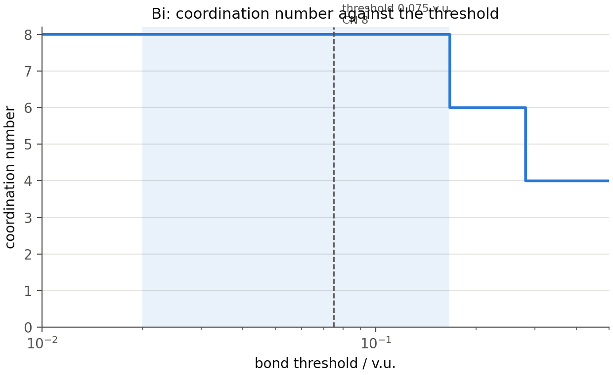
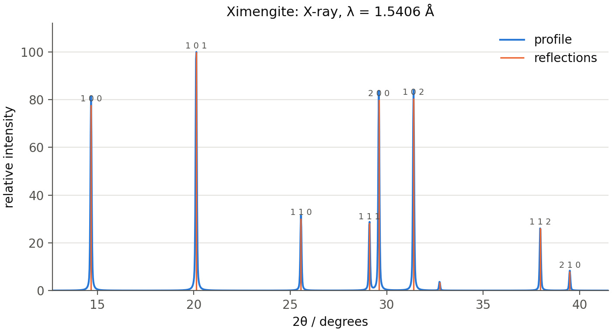
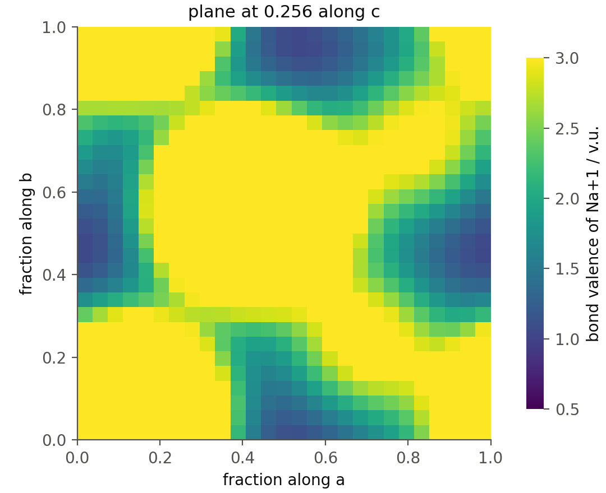
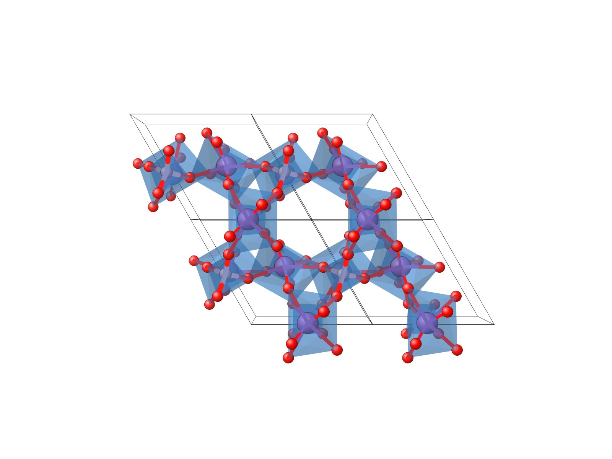
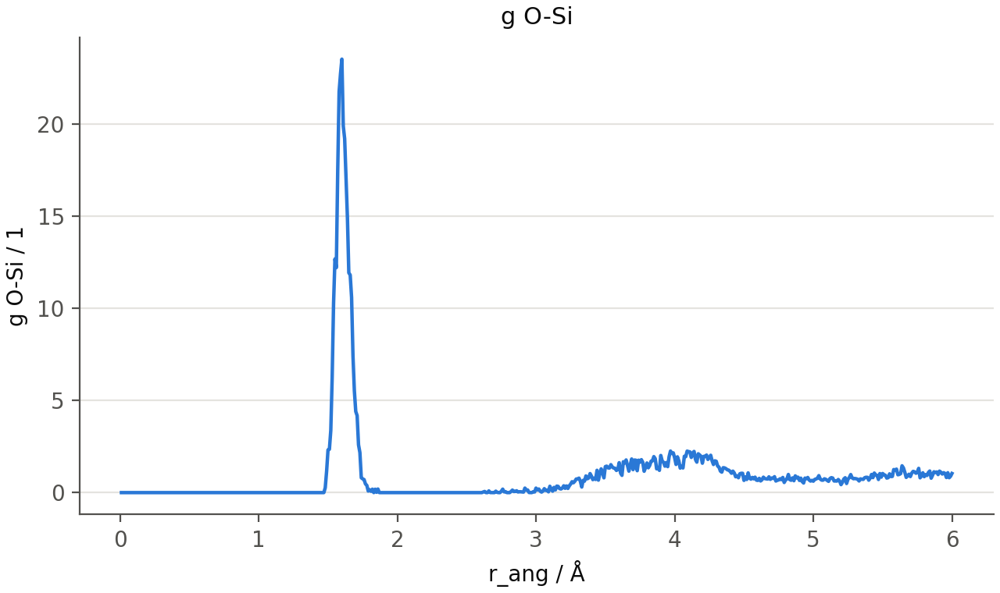
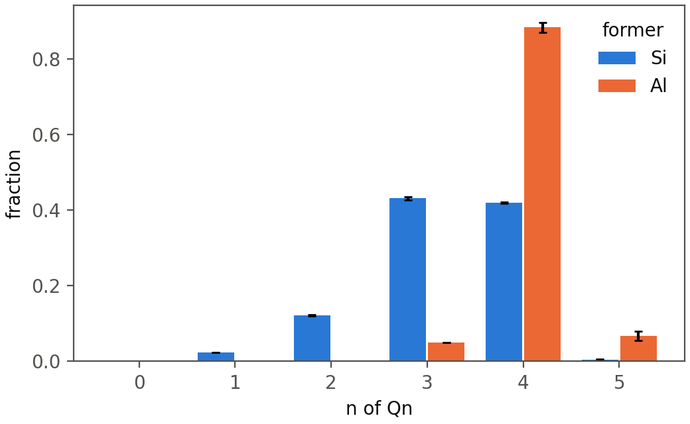

A manual for the FACET library, version 2.1.0.
Everything the FACET window computes, called from a script or a notebook: coordination numbers cut by bond valence, bond-valence sums, powder patterns and pair distribution functions of crystal structures; Qn, oxygen speciation, rings, g(r), S(Q) and diffusion of molecular-dynamics glass models; optical basicity of both. Every example below was run to produce the output printed under it.
The library needs Python 3.11 or newer. It is the same package as the application, installed from GitHub:
python -m pip install "git+https://github.com/sams808/FACET"
python -m pip install pandas matplotlib openpyxl # tables, figures, Excel files
The second line is optional: without pandas, matplotlib and openpyxl the
library still computes everything, and only to_frame(), the figures and the
.xlsx exports are unavailable. The FACET application installed from
FACET-Setup.exe carries its own private Python and cannot be imported from
a script; the pip installation above is separate and can live beside it.
To check an installation, and to see which version is in use:
import facet
print(facet.__version__)
print(facet.selfcheck().title)
2.1.0
90 of 90 checks within tolerance
facet.selfcheck() recomputes the numbers FACET's documentation states for
its bundled structures. From a terminal, python -m facet --selfcheck runs a
longer check that also opens the window.
To move to a newer version, repeat the first pip line with --upgrade.
Six crystal structures and one small glass model are bundled with FACET, so
every example in this manual runs as written. facet.example(name) opens
one; with a file of your own, facet.read(path) opens a crystal structure
and facet.model(path) a molecular-dynamics model.
print(", ".join(facet.examples()))
quartz, eulytite, senarmontite, valentinite, cryolite, bipo4, glass, glass-trajectory
A crystal structure, and the coordination of its cation sites:
c = facet.example("eulytite") # Bi4(SiO4)3
print(c)
print(c.sites().select("site", "ox", "CN", "BVS / v.u.", "phi", "plateau / decades"))
<Crystal 'Eulytine' I -4 3 d: 3 sites, 76 atoms in the cell; v_bond 0.075 v.u.>
sites of Eulytine
site ox CN BVS / v.u. phi plateau / decades
---- -- -- ---------- ------ -----------------
Bi 3 6 3.2404 0.4194 1.092
Si 4 4 4.0139 0 1.7005
note: bond threshold 0.075 v.u., listing threshold 0.02 v.u., parameters: Brese & O'Keeffe 1991
A glass model, and the Qn distribution of its silicon:
m = facet.example("glass") # 20Na2O-10CaO-5Al2O3-65SiO2, 1200 atoms
print(repr(m))
r = m.analyse("glass", formers=["Si", "Al"])
print(r.table("glass", "Qn Si (BV)").select("key", "mean (fraction)", "items per frame"))
<Model 'practice_glass.data': 1200 atoms, 1 frame(s)>
glass: Qn Si (BV)
key mean (fraction) items per frame
--- --------------- ---------------
0 0 260
1 0.0231 260
2 0.1231 260
3 0.4308 260
4 0.4192 260
5 0.0038 260
note: one frame: the spread across frames (std, ddof = 1) is undefined and given as NaN
Optical basicity of a composition:
print(facet.basicity.composition("20Na2O-10CaO-5Al2O3-65SiO2").value)
0.5935961013556568
The rest of the manual takes these three in turn: crystal structures (section 4), glass models (section 5) and optical basicity (section 6), after a section on what the results are.
Anything that is a list of rows comes back as a Table. A Table is a
Python list of dictionaries, one dictionary per row, and nothing else has to
be learned to use it:
sites = c.sites()
print(type(sites[0]), len(sites))
print(sites[0]["site"], sites[0]["CN"], sites[0]["BVS / v.u."])
<class 'dict'> 2
Bi 6 3.2403648509228815
It carries a few helpers for the usual next step. Column names state their unit, so the name to type is the name that is printed.
print(sites.columns[:9])
print(sites.column("BVS / v.u.")) # one column as a numpy array
print(sites.where(element="Bi").select("site", "CN", "shortest bond / Å", "longest bond / Å"))
['site', 'element', 'ox', 'Wyckoff', 'multiplicity', 'CN', 'CN listed', 'ECoN', 'BVS / v.u.']
[3.24036485 4.01386418]
sites of Eulytine
site CN shortest bond / Å longest bond / Å
---- -- ----------------- ----------------
Bi 6 2.158 2.606
note: bond threshold 0.075 v.u., listing threshold 0.02 v.u., parameters: Brese & O'Keeffe 1991
| Helper | Gives |
|---|---|
table.columns |
the column names |
table.column(name) |
one column as a numpy array |
table.select(a, b, ...) |
the same rows with only these columns |
table.where(element="O") |
the rows whose column equals the value |
table.sorted_by(name, reverse=False) |
the rows in order |
table.head(n) |
the first rows |
table.to_frame() |
a pandas DataFrame |
table.to_csv(path) |
a CSV file, the notes as comment lines |
print(table), table.text(notes=False) |
aligned text, with the title and the notes, or without the notes |
table.notes |
how the rows were produced: thresholds, parameters |
With pandas, a table becomes a data frame in one call, and everything pandas does is then available:
frame = c.sites(anions=True).to_frame()
print(frame.groupby("element")[["CN", "BVS / v.u."]].mean().round(3))
CN BVS / v.u.
element
Bi 6.0 3.240
O 3.0 2.084
Si 4.0 4.014
In a Jupyter notebook a Table left as the last line of a cell is displayed
as a formatted table.
A calculation that produces more than rows (a powder pattern, a pair
distribution function, a field over the cell, the analysis of one site)
returns the object the application itself works with. Each has plain
attributes, usually numpy arrays, and a notes list. The sections below name
the attributes worth knowing; help(obj) and dir(obj) show the rest.
FACET does not grade its results. A number comes with the statements needed
to read it: which threshold, which parameter set, whether a bond-valence
parameter was estimated, what a file left unsaid. They are in table.notes,
result.notes and, for a model, in print(model). Reading them is part of
using the library.
Most numbers below depend on two thresholds, both in valence units (v.u.):
v_bond (default 0.075): a contact whose bond valence is above it counts
as a bond. It replaces a distance cutoff, and it cuts every anion at the
same bond strength instead of at a distance chosen for oxygen.v_list (default 0.02): contacts above it are kept in the tables, bonded
or not.The bond valence of a contact of length d is exp((R0 - d) / b), with R0
and b from a table of bond-valence parameters (Brese and O'Keeffe 1991 by
default).
print(facet.bond_valence(1.61, r0=1.624)) # a Si-O bond of 1.61 Å
print(facet.cutoff_distance(r0=1.624, v=0.075)) # the Si-O distance where v = 0.075
1.0385628036326633
2.582398851214956
facet.read takes CIF, VESTA, POSCAR and CONTCAR, SHELX (.res, .ins),
PDB, CrystalMaker text and XYZ files.
c = facet.read("my_structure.cif")
c = facet.read("several.cif", block="phase_2") # one data block of a CIF
all_of_them = facet.read_all("several.cif") # every block, a list
c = facet.read("my_structure.cif", v_bond=0.10) # another bond threshold
c = facet.read("my_structure.cif", params="bvparm2020") # the IUCr parameter table
What was read:
c = facet.example("bipo4")
print(c.name, "|", c.formula, "|", c.spacegroup)
print(c.cell.lengths, c.cell.angles, round(c.cell.volume, 2))
print(c.labels)
print(c.composition()["counts"], round(c.density()["density"], 3), "g/cm3")
Ximengite | Bi O4 P | P 31 2 1
(6.966, 6.966, 6.46) (90.0, 90.0, 120.0) 271.48
['Bi', 'P', 'O1', 'O2']
{'Bi': 3.0, 'P': 3.0, 'O': 12.0} 5.578 g/cm3
c.check() lists what the reading of the file found worth stating
(occupancies, missing fields, very short contacts), c.oxidation_states()
the oxidation state given to each cation and where it came from, and
c.atoms() every atom of the cell with its coordinates.
c.sites() has one row per cation site; c.sites(anions=True) adds the
anion sites.
print(c.sites(anions=True).select("site", "ox", "multiplicity", "CN", "ECoN",
"BVS / v.u.", "BVS - ox / v.u.", "phi"))
sites of Ximengite
site ox multiplicity CN ECoN BVS / v.u. BVS - ox / v.u. phi
---- -- ------------ -- ------ ---------- --------------- ------
Bi 3 3 8 6.6471 3.0445 0.0445 0.1279
P 5 3 4 4 4.5095 -0.4905 0.0009
O1 -2 6 3 1.0003 1.8445 -0.1555 0.4009
O2 -2 6 3 1.0002 1.9325 -0.0675 0.3568
note: bond threshold 0.075 v.u., listing threshold 0.02 v.u., parameters: Brese & O'Keeffe 1991
| Column | Meaning |
|---|---|
CN |
contacts with a bond valence above v_bond |
CN listed |
contacts above v_list |
ECoN |
Hoppe's effective coordination number |
BVS / v.u. |
bond-valence sum over the bonds |
BVS - ox / v.u. |
the sum minus the oxidation state |
phi |
length of the bond-valence vector sum over the valence sum: 0 for a centred site, larger when the bonds lean to one side (a stereoactive lone pair) |
void half-angle / deg |
half-angle of the largest cone at the site holding no ligand |
plateau / decades |
width, in decades of threshold, of the range of v_bond over which CN does not change |
plateau from, plateau to |
the ends of that range |
estimated parameters |
True when a bond-valence parameter was estimated, not tabulated |
c.site(label) (or c[label]) is one site. Its most used numbers are
attributes:
bi = c.site("Bi")
print(bi)
print(bi.cn, round(bi.bvs, 3), round(bi.phi, 3), round(bi.econ, 2), round(bi.void_angle, 1))
Bi (Bi+3): CN 8 at 0.075 v.u., ECoN 6.65, BVS 3.04, phi 0.128, plateau 0.92 dec / 0.784 A
8 3.045 0.128 6.65 61.4
Every contact, nearest first:
print(bi.contacts().select("neighbour", "distance / Å", "valence / v.u.", "bonded", "parameters"))
contacts of Bi
neighbour distance / Å valence / v.u. bonded parameters
--------- ------------ -------------- ------ ----------
O1 2.311 0.5503 yes fitted
O1 2.311 0.5502 yes fitted
O2 2.329 0.5241 yes fitted
O2 2.329 0.5241 yes fitted
O2 2.5593 0.2813 yes fitted
O2 2.5594 0.2812 yes fitted
O1 2.753 0.1666 yes fitted
O1 2.753 0.1666 yes fitted
note: bonded: valence above 0.075 v.u.; listed: above 0.02 v.u.
The coordination number is a function of the threshold. plateaus() lists
every value it takes and over what range; the row that holds the threshold in
force is marked.
print(bi.plateaus().select("CN", "from / v.u.", "to / v.u.", "width / decades",
"holds the bond threshold"))
plateaus of Bi
CN from / v.u. to / v.u. width / decades holds the bond threshold
-- ----------- --------- --------------- ------------------------
1 0.5502 0.5503 5.652e-06 no
2 0.5241 0.5502 0.0211 no
3 0.5241 0.5241 2.150e-06 no
4 0.2813 0.5241 0.2703 no
5 0.2812 0.2813 4.449e-05 no
6 0.1666 0.2812 0.2273 no
7 0.1666 0.1666 4.428e-05 no
8 0.02 0.1666 0.9207 yes
Contacts that are equal by symmetry differ in their last digits, which is where the plateaus of negligible width between them come from.
The same site at another threshold, without reading the file again:
print(bi.cn_at(0.20), bi.at(0.20).cn, round(bi.at(0.20).bvs, 3))
6 6 2.711
bi.cn_function() returns two arrays, thresholds and coordination numbers,
for a plot; facet.plot.cn_function(bi) draws it:
facet.plot.cn_function(bi, save="cn_function.png")

More on one site:
print(bi.angles().head(4))
print(bi.cn_methods().select("method", "CN", "note"))
angles at Bi
ligand 1 ligand 2 angle / deg d1 / Å d2 / Å
-------- -------- ----------- ------ ------
O2 O1 57.115 2.5594 2.753
O2 O1 57.1158 2.5593 2.753
O2 O1 64.4519 2.329 2.753
O2 O1 64.4525 2.329 2.753
coordination number of Bi by method
method CN note
--------------------- ------ ---------------------------------
Bond valence 8
Distance cutoff 8
Within % of shortest 8
Sum of covalent radii 6
Maximum gap (Brunner) 4 largest step d(k+1)/d(k) = 1.099
Maximum gap (1/d) 4
ECoN (Hoppe) 6.6471 weighted mean distance 2.4019 Å
CHARDI 5.4068
Valence-weighted 5.5329
Voronoi (solid angle) 6.0526 8 facets above 20% of the largest
note: spread over the methods: n 10, min 4, max 8, range 4, median 6.03, mean 6.16, integer_values …
| Call | Gives |
|---|---|
site.contacts() |
every contact: distance, valence, bonded or not, parameters and their source |
site.plateaus() |
each coordination number and its range of threshold |
site.cn_function() |
arrays for the CN against the threshold |
site.cn_at(v), site.at(v) |
the CN, or the whole site, at another threshold |
site.angles() |
every ligand-centre-ligand angle |
site.shells() |
contacts in the order a growing cutoff includes them, with running CN and valence sum |
site.cn_methods() |
the CN by ten definitions (ECoN, CHARDI, largest gap, Voronoi, ...) and their spread |
site.shape() |
distance statistics, polyhedron volume, distortion indices |
site.lone_pair() |
phi, the bond-valence vector, the empty cone |
site.radial_shells(r_max) |
neighbours of any kind grouped by distance |
site.exafs_shells(r_max) |
shells as an EXAFS fit takes them: N, R, sigma squared |
site.write_feff(path) |
a FEFF input with the site as absorber |
site.text("md") |
the site written out, as text, Markdown or LaTeX |
site.row() |
the site's row of c.sites(), as a dictionary |
site.result |
the engine's SiteResult, with everything |
print(c.cutoffs().select("pair", "R0 / Å", "bond cutoff / Å", "shortest / Å", "bonds"))
print(c.anion_sums().select("site", "expected / v.u.", "BVS / v.u.", "contacts"))
print(round(c.gii()["gii"], 3), "v.u., largest at", c.gii()["worst_site"])
cutoffs of Ximengite
pair R0 / Å bond cutoff / Å shortest / Å bonds
------ ------ --------------- ------------ -----
Bi3+–O 2.09 3.0484 2.311 8
P5+–O 1.604 2.5624 1.5595 4
note: bond threshold 0.075 v.u., listing threshold 0.02 v.u., parameters: Brese & O'Keeffe 1991
note: a cutoff distance is d = R0 - b ln(v); it is not chosen, it follows from the valence thresho …
anion valence sums of Ximengite
site expected / v.u. BVS / v.u. contacts
---- --------------- ---------- --------
O1 2 1.8445 3
O2 2 1.9325 3
note: bond threshold 0.075 v.u., listing threshold 0.02 v.u., parameters: Brese & O'Keeffe 1991
0.348 v.u., largest at P
| Call | Gives |
|---|---|
c.cutoffs() |
the distance each cation-anion pair is cut at, with R0 and b |
c.anion_sums() |
the valence sum of every anion site |
c.charge_balance() |
cation and anion valence sums over the cell, and their difference |
c.gii(), c.bond_strain() |
global instability index, bond strain index |
c.a_priori() |
a priori bond valences of the bond network, and the two indices against the observed ones |
c.connectivity() |
which polyhedra share a corner, an edge or a face |
c.stability() |
the CN of every site over a range of thresholds |
c.with_thresholds(v_bond=..., v_list=..., params=...) |
the same structure analysed otherwise |
c.stability() returns an object with thresholds, per_site[label] (the CN
at each threshold) and stable_range(label, at):
scan = facet.example("cryolite").stability()
for label in scan.per_site:
low, high = scan.stable_range(label, at=0.075)
print(f"{label}: CN unchanged from {low:.3f} to {high:.3f} v.u.")
Al: CN unchanged from 0.005 to 0.300 v.u.
Na1: CN unchanged from 0.005 to 0.193 v.u.
Na2: CN unchanged from 0.064 to 0.077 v.u.
pattern = c.diffraction(wavelength=1.5406, two_theta_max=40) # radiation="neutron" for neutrons
lines = facet.table(pattern.reflections)
print(lines.select("h", "k", "l", "d", "two_theta", "intensity", "multiplicity").head(6))
x, y = pattern.profile(two_theta_min=10, two_theta_max=40) # a broadened curve
print(x.shape, round(float(y.max()), 1))
h k l d two_theta intensity multiplicity
- - - ------ --------- --------- ------------
1 0 0 6.0327 14.6719 77.8438 6
1 0 1 4.4091 20.1232 100 12
1 1 0 3.483 25.5543 30.2318 6
1 1 1 3.0658 29.1039 28.3231 12
2 0 0 3.0164 29.5914 79.9477 6
1 0 2 2.8475 31.3898 80.4843 12
(1502,) 100.0
facet.plot.pattern(pattern, save="pattern.png")

c.d_spacing(h, k, l) and c.two_theta(h, k, l, wavelength) give one
reflection; c.reflections() lists positions without intensities.
The pair distribution function comes back with its arrays and with every assumption it made:
g = c.pdf(r_max=10.0, radiation="X-ray")
print(g.r.shape, g.G.shape) # also g.g and g.R
for note in g.notes[:3]:
print("-", note)
(1000,) (1000,)
- X-ray weights at Q = 0; the pair weights are Bi-Bi 40.7%, Bi-O 31.4%, Bi-P 14.7%, O-O 6.1%, O-P …
- rho0 = 0.06630 atoms/A^3 from 18 atoms per cell, occupancies included.
- All 18 atoms took U from the file.
Options of c.pdf: dr, u_iso, q_min, q_max, q_damp, q_broad,
delta1, delta2. facet.plot.pdf(g) draws it.
For EXAFS, the shells about an absorber and a FEFF input:
shells = facet.table(bi.exafs_shells(r_max=4.0).shells)
print(shells.select("element", "count", "r_mean", "sigma2_einstein"))
element count r_mean sigma2_einstein
------- ----- ------ ---------------
O 4 2.32 0.0048
O 2 2.5594 0.0048
O 2 2.753 0.0048
P 2 3.23 0.0026
P 4 3.6686 0.0026
O 2 3.9052 0.0048
O 2 3.9908 0.0048
plane = c.plane(1, 0, 1)
print(plane, plane.occupancy(tolerance=0.3), round(plane.angle_to(0, 0, 1), 2))
<Plane (1 0 1) d = 4.4091 Å> {'Bi': 1.0, 'O': 2.0} 46.96
A valence map is the bond-valence sum a probe ion would have at every point of the cell; where it equals the ion's charge, the ion would be correctly bonded. It is used to look for the sites and the pathways of a mobile ion.
cryolite = facet.example("cryolite")
grid = cryolite.valence_map("Na", resolution=0.2)
print(grid.shape, round(grid.statistics()["min"], 3))
print(grid.at_fractional([0.0, 0.0, 0.5])) # the value at one point
facet.plot.grid(grid, "c", 0.25, levels=(0.5, 3.0), save="valence_map.png")
(27, 28, 39) 1.04
[1.29842761]

c.energy_map(element) turns the map into an energy-like landscape, and
facet.read_volume(path) reads a CHGCAR, a Gaussian cube or an XSF file into
the same kind of grid.
c.basicity() gives the optical basicity of the structure (section 6).
c.write("bipo4.cif") # also .vasp (POSCAR), .xyz, .vesta
c.render("bipo4.png", style="polyhedral", along="c", cell_range=(2, 2, 1))

c.render draws the structure as the application does and writes a PNG, an
SVG or a PDF. style is one of ball-and-stick, polyhedral,
space-filling, stick, wireframe, displacement ellipsoids; polyhedra
is True, False or a list of site labels; along is a, b, c, a*,
b*, c* or a vector.
facet.compare puts the cation sites of several structures in one table,
and facet.report_on writes the full report of the application (sites,
contacts, plateaus, cutoffs, charge balance, basicity) to an Excel, CSV,
HTML, Markdown, LaTeX or JSON file.
files = [facet.examples()[name] for name in ("senarmontite", "valentinite")]
both = facet.compare(files) # the two forms of Sb2O3
print(both.select("structure", "site", "CN", "BVS / v.u.", "phi", "plateau / decades"))
report = facet.report_on(files, "sb2o3.xlsx")
print({name: len(rows) for name, rows in report.tables().items()})
sites of several structures
structure site CN BVS / v.u. phi plateau / decades
------------ ---- -- ---------- ------ -----------------
Senarmontite Sb 6 3.2035 0.4604 0.6082
Valentinite Sb 5 3.1503 0.4874 0.9412
{'sites': 2, 'contacts': 11, 'plateaus': 9, 'cutoffs': 2, 'balance': 2, 'basicity': 5}
Both take a folder as well as a list of files.
facet.model reads LAMMPS data files and dumps, extended XYZ, DL_POLY
(CONFIG, REVCON, HISTORY), VASP (POSCAR, XDATCAR), GROMACS, CP2K and other
trajectory formats, with one frame or many. A LAMMPS file numbers its atom
types and does not name them, so the elements are given as a type_map:
path = facet.examples()["glass"] # a LAMMPS data file
m = facet.model(path, type_map={1: "O", 2: "Si", 3: "Al", 4: "Na", 5: "Ca"})
for line in m.describe()[2:10]:
print(line)
1200 atoms per frame; 1 readable frame(s)
timesteps 10000 to 10000
no frame times in the file
box (frame 0): a 24.9422, b 24.9422, c 24.9422 Å; alpha 90, beta 90, gamma 90 deg; volume 15516.8 …
number density (frame 0) 0.0773356 atoms/Å^3
composition (frame 0): Al 40, Ca 40, Na 160, O 700, Si 260
the box is the same in every frame
type map (user): 1 -> O, 2 -> Si, 3 -> Al, 4 -> Na, 5 -> Ca
When the Masses section holds the elements' own masses, FACET names the
types from them and the type_map can be left out; a mass written short
(22.9 for sodium) is not recognised, and the reader then asks for the map.
print(m) gives the whole statement of what was read and what was assumed
(units, charges, box). It is worth reading once for every new kind of file.
print(m.n_atoms, m.n_frames, m.composition())
print(round(m.density(), 3), "g/cm3")
print(m.oxidation_states())
1200 1 {'Al': 40, 'Ca': 40, 'Na': 160, 'O': 700, 'Si': 260}
2.661 g/cm3
{'Al': 3, 'Ca': 2, 'Na': 1, 'O': -2, 'Si': 4}
The oxidation states are the usual ones of each element. An element in
another state is given where it is used: ox={"Fe": 2}.
m.frame(k) is one frame (k from 0, negative from the end) with its arrays:
elements, cart_ang (positions in Å), frac, box_ang, and time_ps
when the file states it.
A model keeps its file open, so that a long trajectory is read frame by frame
and not at once. m.close() closes it; in a loop over many files, with
facet.model(path) as m: closes each at the end of its block (the last
recipe of section 8).
facet.analyses() lists every analysis a model can be given, with what each
measures and what it needs:
print(facet.analyses().select("analysis", "runs", "needs"))
analyses of an MD model
analysis runs needs
---------------------- ---------------- -------------------------------------------------------- …
glass per frame formers
basicity per frame
scattering per frame scattering.r_window, scattering.radiations
rings per frame formers, network.ring_criterion, network.ring_max_size
coordination-sequences per frame formers, network.n_shells
polyhedral-sharing per frame formers
components per frame formers
warren-cowley per frame
bond-order per frame
tetrahedral-order per frame
polyhedron-shape per frame
voronoi per frame
empty-spheres per frame voids.radii
free-volume per frame voids.grid_spacing_ang, voids.probe_radius_ang, voids.ra …
channels per frame channels.delta_vu, channels.deltas_vu, channels.probe
modifier-density per frame channels.k_rich, channels.modifiers
void-regions per frame channels.void_probe_radius_ang, voids.radii
nmr per frame nmr.correlation, nmr.delta_ppm, nmr.fwhm_ppm, nmr.linesh …
exafs per frame exafs.absorber
bond-lifetimes per frame a time axis (timestep_fs or frame_interval_ps) and two f …
msd whole trajectory a time axis (timestep_fs or frame_interval_ps) and two f …
self-correlations whole trajectory dynamics.lag_t_ps, a time axis (timestep_fs or frame_int …
distinct-van-hove whole trajectory dynamics.distinct_n_origins, dynamics.distinct_pairs, dy …
vacf whole trajectory a time axis (timestep_fs or frame_interval_ps) and two f …
kinetic-temperature whole trajectory a time axis (timestep_fs or frame_interval_ps) and two f …
conductivity whole trajectory charges_e, dynamics.fit_t_min_ps/fit_t_max_ps, temperatu …
nmr-comparison after the others nmr.measured_fractions
scattering-comparison after the others scattering.measured, scattering.r_window, scattering.rad …
feff after the others exafs.absorber, feff.cluster_radius_ang, feff.edge, feff …
m.analyse(names..., inputs...) runs analyses and returns their results.
The glass analysis is the main one: coordination numbers by bond valence
and by distance, oxygen speciation, Qn, bond angles and lengths, partial g(r).
It needs the network formers.
r = m.analyse("glass", formers=["Si", "Al"])
print(r)
print(r.descriptors().where(kind="distribution").select("descriptor", "rows").head(14))
<Results of glass: 176 descriptor(s)>
descriptors measured
descriptor rows
--------------------------- ----
CN Al (BV) 2
Al CN (4, 5, 6, other) (BV) 4
CN Ca (BV) 5
CN Na (BV) 6
CN O (BV) 5
CN Si (BV) 2
O speciation (BV) 4
Qn Al (BV) 6
Qn Si (BV) 6
Qn(mAl) Al (BV) 7
Qn(mAl) Si (BV) 13
Qn(mSi) Al (BV) 8
Qn(mSi) Si (BV) 12
O linkages (BV) 10
Each line is a descriptor: one table of one analysis. (BV) marks a
descriptor counted with the bond-valence threshold, (distance) the same
counted with a distance cutoff at the first minimum of g(r); both are
always given. r.find(text) searches the names, and r.table(analysis,
descriptor) returns one as rows:
print(r.table("glass", "O speciation (BV)").select("key", "mean (fraction)", "items per frame"))
print(r.table("glass", "Al CN (4, 5, 6, other) (BV)").select("key", "mean (fraction)"))
print(r.table("glass", "mean CN Na (BV)").select("descriptor", "mean (1)"))
print(r.table("glass", "distance cutoffs").select("pair", "cutoff (Å)"))
glass: O speciation (BV)
key mean (fraction) items per frame
---------- --------------- ---------------
free 0.0014 700
NBO 0.28 700
BO 0.7157 700
tricluster 0.0029 700
note: one frame: the spread across frames (std, ddof = 1) is undefined and given as NaN
glass: Al CN (4, 5, 6, other) (BV)
key mean (fraction)
----- ---------------
Al4 0.925
Al5 0.075
Al6 0
other 0
note: one frame: the spread across frames (std, ddof = 1) is undefined and given as NaN
glass: mean CN Na (BV)
descriptor mean (1)
---------- --------
mean CN Na 4.2
note: one frame: the spread across frames (std, ddof = 1) is undefined and given as NaN
glass: distance cutoffs
pair cutoff (Å)
---- ----------
Al-O 2.88
Ca-O 3.38
Na-O 3.46
Si-O 2.48
A curve, such as a partial g(r), is a container with its arrays:
g = r.get("glass", "g O-Si")
print(type(g).__name__, g.axis_name, g.axis_unit, g.axis.shape, g.mean.shape)
peak = g.axis[g.mean.argmax()]
print(f"first Si-O peak at {peak:.2f} Å")
facet.plot.descriptor(r, "glass", "g O-Si", save="g_si_o.png")
Series r_ang Å (600,) (600,)
first Si-O peak at 1.60 Å

What the run states about the model and about itself is in r.notes, the
full provenance (file, frames, thresholds, cutoffs, every method parameter)
in r.provenance, and r.export writes everything:
written = r.export("glass.xlsx") # one sheet per descriptor
files = r.export("glass_csv") # or one CSV per descriptor
print(written[0].name, len(files), "CSV files")
glass.xlsx 179 CSV files
With a trajectory, each descriptor is the mean over the frames with its
spread, and per_frame=True adds the frames one by one.
t = facet.example("glass-trajectory") # six frames, 2 ps apart
print(repr(t))
rt = t.analyse("glass", formers=["Si", "Al"])
print(rt.table("glass", "Qn Si (BV)").select("key", "mean (fraction)", "std (fraction)", "frames used"))
qn = rt.table("glass", "Qn Si (BV)", per_frame=True) # one more column per frame
print(qn.select("key", "frame 0 (fraction)", "frame 2 (fraction)", "frame 5 (fraction)"))
<Model 'practice_glass.lammpstrj.gz': 1200 atoms, 6 frame(s)>
glass: Qn Si (BV)
key mean (fraction) std (fraction) frames used
--- --------------- -------------- -----------
0 0 0 6
1 0.0231 0 6
2 0.1218 0.002 6
3 0.4308 0.0042 6
4 0.4199 0.0016 6
5 0.0045 0.0016 6
glass: Qn Si (BV)
key frame 0 (fraction) frame 2 (fraction) frame 5 (fraction)
--- ------------------ ------------------ ------------------
0 0 0 0
1 0.0231 0.0231 0.0231
2 0.1192 0.1231 0.1231
3 0.4346 0.4308 0.4308
4 0.4192 0.4192 0.4192
5 0.0038 0.0038 0.0038
frames chooses the frames: frames="0:100:5" (start, stop, step), a
slice, or a list of indices. Opening a trajectory reads nothing until a
frame is needed, so a long file costs only the frames used.
An analysis that lacks an input says which before any frame is read:
for line in m.missing("rings", "scattering"):
print("-", line[:96])
- rings: formers: the network formers (cation elements, e.g. Si,B); the 'bridging anion' graph and
- scattering: scattering.r_window: 'none' or 'Lorch', the M(r) of the sine transform; it changes S
- scattering: scattering.radiations: one or more of X-ray, neutron, electron
- rings: network.ring_criterion: king, guttman or primitive: the definition of a ring
- rings: network.ring_max_size: the largest ring searched, in graph nodes; the cost grows with it
The inputs are keywords of analyse. The top-level ones are formers,
frames, ox, v_bond, v_list, timestep_fs or frame_interval_ps,
temperature_k, charges_e and workers. The others are grouped by topic,
each group a dictionary: glass, scattering, network, order, voids,
channels, nmr, exafs, dynamics, basicity.
r2 = m.analyse("rings", "scattering", formers=["Si", "Al"],
network={"ring_criterion": "king", "ring_max_size": 10},
scattering={"radiations": ["X-ray", "neutron"], "r_window": "Lorch"})
print(r2.descriptors("rings").select("descriptor", "kind"))
sizes = r2.table("rings", "ring sizes (T atoms: Al, Si), king").select("key", "mean (fraction)")
print(sizes.text(notes=False))
print(len(sizes.notes), "notes, the first:", sizes.notes[0][:60], "...")
s = r2.get("scattering", "S(Q) neutron")
print(s.axis_name, s.axis_unit, s.axis[:3], s.mean[:3].round(3))
descriptors measured
descriptor kind
------------------------------------ ------------
R_C(n), king rings series
R_N(n), king rings series
P_N(n), king rings series
P_max(n), king rings series
P_min(n), king rings series
distinct rings by size (nodes), king distribution
ring sizes (nodes), king distribution
ring sizes (T atoms: Al, Si), king distribution
rings: ring sizes (T atoms: Al, Si), king
key mean (fraction)
--- ---------------
3 0.0037
4 0.0618
5 0.1292
6 0.161
7 0.2004
8 0.2079
9 0.1273
10 0.1086
10 notes, the first: graph: bridging anion: formers Al, Si linked through a share ...
q_inv_ang 1/Å [0.02 0.04 0.06] [0.102 0.102 0.102]
print(facet.options()) lists every option of every group with its type and
default, and a wrong name or value is refused with the list of the valid
ones. m.preset(name) gives the analyses and options of one of the
questions the application offers as presets (facet.presets() lists them):
p = m.preset("Aluminosilicate")
print(p["analyses"])
print(p["formers"], p["network"], p["voids"])
['glass', 'basicity', 'rings', 'polyhedral-sharing', 'components', 'bond-order', 'polyhedron-shape …
['Al', 'Si'] {'ring_criterion': 'king', 'ring_max_size': '12'} {'radii': 'vdw'}
The analyses of time (msd, vacf, bond-lifetimes, conductivity, the
van Hove functions) need more than one frame and a time axis. When the file
does not state its frame times, the time between frames is given:
rd = t.analyse("msd", frame_interval_ps=2.0)
print(rd.descriptors().select("descriptor", "kind", "rows").head(8))
descriptors measured
descriptor kind rows
------------------------- ------ ----
MSD Al series 6
MSD Ca series 6
MSD Na series 6
MSD O series 6
MSD Si series 6
MSD of the centre of mass series 6
The practice trajectory is six frames of a glass at 300 K, where nothing
diffuses; a diffusion coefficient needs a long run of a melt and the fit
window dynamics={"fit_t_min_ps": ..., "fit_t_max_ps": ...}.
m.atoms() gives every atom of a frame with what FACET measures on a site:
atoms = m.atoms()
print(atoms.head(4).select("atom", "element", "CN", "BVS / v.u.", "phi", "plateau / decades"))
frame = atoms.to_frame()
print(frame.groupby("element")[["CN", "BVS / v.u.", "phi"]].mean().round(3))
atoms of practice_glass.data, frame 0
atom element CN BVS / v.u. phi plateau / decades
---- ------- -- ---------- ------ -----------------
1 Si 4 3.992 0.0639 1.5955
2 Si 4 4.1094 0.0753 1.6147
3 O 2 1.9244 0.3545 1.5756
4 Na 4 0.5967 0.4191 0.5149
note: bond threshold 0.075 v.u., listing threshold 0.02 v.u.
CN BVS / v.u. phi
element
Al 4.075 3.134 0.072
Ca 5.475 1.642 0.152
Na 4.200 0.845 0.288
O 2.993 2.011 0.313
Si 4.004 4.159 0.062
One atom can be read exactly as a site of a crystal (section 4): its contacts, plateaus, angles, CN function and CN by other methods.
number = atoms.where(element="Al")[0]["atom"]
al = m.site(number)
print(al)
print(al.contacts().select("neighbour", "distance / Å", "valence / v.u.", "bonded"))
Al6 (Al+3): CN 4 at 0.075 v.u., ECoN 3.84, BVS 3.32, phi 0.067, plateau 1.49 dec / 1.269 A
contacts of Al6
neighbour distance / Å valence / v.u. bonded
--------- ------------ -------------- ------
O553 1.6651 0.9627 yes
O1167 1.6971 0.8829 yes
O252 1.7097 0.8534 yes
O890 1.8295 0.6172 yes
note: bonded: valence above 0.075 v.u.; listed: above 0.02 v.u.
| Call | Gives |
|---|---|
m.atoms(k) |
every atom: CN, valence sum, phi, plateau width |
m.site(atom, k) |
one atom as a site |
m.environments(element, formers=...) |
the environments of an element grouped by likeness: (groups, per atom) |
m.write_environment(atom, path, shells=2) |
the atom and its neighbours out to shells bonds, as an XYZ file |
m.density_map(elements, grid, sigma) |
smoothed number density of some elements over the box |
m.basicity(formers=...) |
optical basicity of the frame (section 6) |
m.parity(table_path, ...) |
another code's per-atom table beside FACET's values |
Optical basicity has its own part of the library, facet.basicity, with its
own reference (docs/basicity_library.md). The three entry points:
fb = facet.basicity
comp = fb.composition("20Na2O-10CaO-5Al2O3-65SiO2") # moles; unit="wt" for weights
print(round(comp.value, 4), round(comp.polarisability, 3), round(comp.band("Pb2+")))
quartz = facet.example("quartz").basicity() # a crystal: lambda per anion site
print(round(quartz.bulk, 4), round(quartz.value, 4))
glass = m.basicity(formers=["Si", "Al"]) # a model frame: lambda per atom
print(round(glass.bulk, 4), round(glass.value, 4))
print(fb.text_table(("anion", "class", "atoms", "mean", "sd", "low", "high"), glass.by_class()))
0.5936 1.551 42299
0.4775 0.4544
0.5936 0.574
anion class atoms mean sd low high
----- ---------- ----- ----- ----- ----- -----
O free 1 1.051 0.000 1.051 1.051
O NBO 196 0.726 0.039 0.621 0.884
O BO 501 0.514 0.064 0.380 0.716
O tricluster 2 0.516 0.052 0.465 0.568
comp.value is Λ from the composition alone (Duffy and Ingram); the
value of a structure or a frame is the mean of the microscopic λ of its
anions, each from the bond valences it receives. glass.values is λ per
atom, glass.linkages() groups the anions by what they are bonded to, and
glass.field("Na") maps what a probe cation would sense. The scale of
basicity moderating parameters is an argument (scale="duffy").
The quick figures are for a first look. Each returns the matplotlib figure;
save="name.png" (or .pdf, .svg) writes it and show=True opens a
window.
| Call | Draws |
|---|---|
facet.plot.cn_function(site) |
the CN of a site against the threshold |
facet.plot.contacts(site) |
bond valence against distance for every contact |
facet.plot.stability(crystal) |
the CN of every site against the threshold |
facet.plot.pattern(pattern) |
a powder pattern, lines and profile |
facet.plot.pdf(pdf, which="G") |
a pair distribution function |
facet.plot.grid(grid, "c", 0.5) |
one plane of a map |
facet.plot.descriptor(results, analysis, name) |
one descriptor of a model: bars, steps or a curve with its spread |
facet.basicity.plot.histogram(frame_result) and others |
the basicity figures |
For a figure of one's own, every number is in the objects. The Qn distributions of the two formers of the practice glass, side by side:
import matplotlib
matplotlib.use("Agg")
import matplotlib.pyplot as plt
fig, ax = plt.subplots(figsize=(5.2, 3.2), layout="constrained")
for shift, former, colour in ((-0.2, "Si", "#2a78d6"), (0.2, "Al", "#eb6834")):
table = rt.table("glass", f"Qn {former} (BV)")
n = table.column("key")
ax.bar(n + shift, table.column("mean (fraction)"), width=0.38, color=colour,
yerr=table.column("std (fraction)"), capsize=2, label=former)
ax.set_xlabel("n of Qn")
ax.set_ylabel("fraction")
ax.legend(frameon=False, title="former")
fig.savefig("qn.png", dpi=200)

Each recipe runs as written on the bundled files. With files of your own,
replace the list of paths, for instance by sorted(Path("my_folder").glob("*.cif")).
import pandas as pd
rows = []
for name in ("eulytite", "bipo4"):
crystal = facet.example(name) # facet.read(path) for a file
for row in crystal.sites().where(element="Bi"):
rows.append({"structure": crystal.name, **row})
bi = pd.DataFrame(rows)[["structure", "site", "CN", "BVS / v.u.", "phi", "plateau / decades"]]
print(bi.round(3).to_string(index=False))
bi.to_csv("bi_sites.csv", index=False)
structure site CN BVS / v.u. phi plateau / decades
Eulytine Bi 6 3.240 0.419 1.092
Ximengite Bi 8 3.045 0.128 0.921
series = []
for x in (0, 5, 10, 15, 20):
text = f"{20 - x}Na2O-{10 + x}CaO-5Al2O3-65SiO2"
found = facet.basicity.composition(text)
series.append({"composition": text, "Lambda": round(found.value, 4),
"alpha(O2-) / Å3": round(found.polarisability, 3)})
print(facet.Table(series))
composition Lambda alpha(O2-) / Å3
-------------------------- ------ ---------------
20Na2O-10CaO-5Al2O3-65SiO2 0.5936 1.551
15Na2O-15CaO-5Al2O3-65SiO2 0.5892 1.545
10Na2O-20CaO-5Al2O3-65SiO2 0.5847 1.539
5Na2O-25CaO-5Al2O3-65SiO2 0.5803 1.533
0Na2O-30CaO-5Al2O3-65SiO2 0.5759 1.526
per_frame = rt.table("glass", "Qn Si (BV)", per_frame=True).to_frame().set_index("key")
frames = per_frame[[c for c in per_frame.columns if c.startswith("frame ")]].T
frames.index = [int(name.split()[1]) for name in frames.index] # "frame 3 (fraction)" -> 3
frames.index.name = "frame"
print(frames.round(3).to_string())
key 0 1 2 3 4 5
frame
0 0.0 0.023 0.119 0.435 0.419 0.004
1 0.0 0.023 0.123 0.431 0.419 0.004
2 0.0 0.023 0.123 0.431 0.419 0.004
3 0.0 0.023 0.123 0.423 0.423 0.008
4 0.0 0.023 0.119 0.435 0.419 0.004
5 0.0 0.023 0.123 0.431 0.419 0.004
atoms = m.atoms().to_frame()
atoms["lambda"] = m.basicity(formers=["Si", "Al"]).values # NaN for the cations
atoms.to_csv("atoms.csv", index=False)
print(atoms[["atom", "element", "CN", "BVS / v.u.", "lambda"]].head(4).round(3).to_string(index=False))
atom element CN BVS / v.u. lambda
1 Si 4 3.992 NaN
2 Si 4 4.109 NaN
3 O 2 1.924 0.497
4 Na 4 0.597 NaN
from pathlib import Path
rows = []
for path in sorted(Path("runs").glob("*.data")):
with facet.model(path, type_map={1: "O", 2: "Si", 3: "Na"}) as model:
results = model.analyse("glass", formers=["Si"])
for row in results.table("glass", "Qn Si (BV)"):
rows.append({"model": path.stem, "n": row["key"], "fraction": row["mean (fraction)"]})
table = pd.DataFrame(rows).pivot(index="model", columns="n", values="fraction")
| What is printed | What it means, and what to do |
|---|---|
... type_map ... when opening a LAMMPS file |
the file numbers its atom types; give type_map={1: "O", 2: "Si", ...} in the order of the Masses section |
... is an MD model, not a crystal structure |
the file was given to facet.read; open it with facet.model |
rings: formers: ... or another analysis: input: ... line |
the analysis lacks an input; m.missing(...) lists them all, and each is a keyword of analyse |
unknown option ... or ... is not one of ... |
a name or a value is misspelt; the message lists the valid ones, and print(facet.options()) all of them |
no site labelled ... |
the label is not in the file; c.labels lists the labels |
| a note that a parameter was estimated | no tabulated bond-valence parameter covers the pair; the valence sums of that site rest on an estimate, and the note names the pair |
| a note that the model is not neutral | the atom counts and the oxidation states do not balance; the count of one element is usually the cause |
nan in a table |
the quantity is undefined there: a spread over one frame, a plateau width exactly on a step, λ of a cation |
to_frame() needs pandas, the figures need matplotlib |
the optional package is not installed (section 1) |
| a different number from the application | the thresholds or the parameter set differ; table.notes and r.provenance state those used |
A calculation that cannot be done is refused with the reason. It is not replaced by an approximate one.
The numbers depend on choices, and a result is reproducible when they are stated with it:
facet.__version__);c.params.name, or the note of any table);table.notes, results.provenance and the header of every exported file
carry them. The references behind the main quantities:
docs/practice_glass.facet| Call | Returns |
|---|---|
facet.read(path, block=None, v_bond=, v_list=, params=) |
a Crystal |
facet.read_all(path) |
a list of Crystal, one per data block |
facet.model(path, type_map=..., **reader_options) |
a Model |
facet.load(path) |
a Model or a Crystal, by what the file is |
facet.example(name), facet.examples() |
a bundled file opened; the names and paths |
facet.compare(paths_or_crystals) |
one table of the cation sites of several structures |
facet.report_on(paths, out=None, fmt=None, ...) |
the report over several structures, written when out is given |
facet.analyses(), facet.presets(), facet.options() |
the analyses of a model, the presets, every option |
facet.parameters(name) |
a bond-valence parameter set: "built-in", "bvparm2020" or a file |
facet.bond_valence(d, r0, b=0.37), facet.cutoff_distance(r0, v, b=0.37) |
the bond-valence formula and its inverse |
facet.read_volume(path) |
a grid from a CHGCAR, cube or XSF file |
facet.table(objects), facet.Table(rows) |
a table from the engine's objects, or from rows |
facet.selfcheck() |
the reference numbers recomputed |
facet.basicity, facet.plot |
optical basicity; the quick figures |
Crystal| Identity | name, formula, spacegroup, cell, labels, n_sites, n_atoms, notes, structure |
| Thresholds | v_bond, v_list, params, with_thresholds(...) |
| Sites | sites(anions=False), site(label), results(anions=False), atoms() |
| File | composition(), density(), reciprocal_cell(), check(), oxidation_states(), disorder(), configuration(choices) |
| Bond valence | cutoffs(), anion_sums(), charge_balance(), gii(), bond_strain(), a_priori(), connectivity(), stability() |
| Simulation | diffraction(...), reflections(...), d_spacing(h, k, l), two_theta(h, k, l), structure_factor(h, k, l), pdf(...) |
| Geometry and maps | plane(h, k, l), torsion(a, b, c, d), valence_map(element), energy_map(element) |
| Basicity | basicity(scale, formers) |
| Output | write(path), render(path, ...) |
Model and its Results| What was read | describe(), n_atoms, n_frames, elements, composition(k), density(k), oxidation_states(), frame(k), close() |
| Analyses | analyse(*names, **inputs), missing(*names, **inputs), available(**inputs), preset(name), request(...) |
| Atom by atom | atoms(k), site(atom, k), environments(element), write_environment(atom, path), density_map(elements), basicity(k), parity(table) |
| Results | analyses, failed, notes, provenance, minima, descriptors(analysis), find(text), table(analysis, descriptor, per_frame=False), get(analysis, descriptor), raw(analysis), export(path) |
The same calculations without writing Python:
python -m facet.site FILE --all one site, or every site, as text
python -m facet.report FOLDER -o report.xlsx the report over a set of structures
python -m facet.md describe FILE what a model file holds
python -m facet.md analyses the analyses and their inputs
python -m facet.md analyse FILE --only glass --formers Si,Al --out out.xlsx
python -m facet.basicity composition "30Na2O-70SiO2"
python -m facet.check the reference numbers
python -m facet --selfcheck this installation, checked
python -m facet FILE the application, on a file